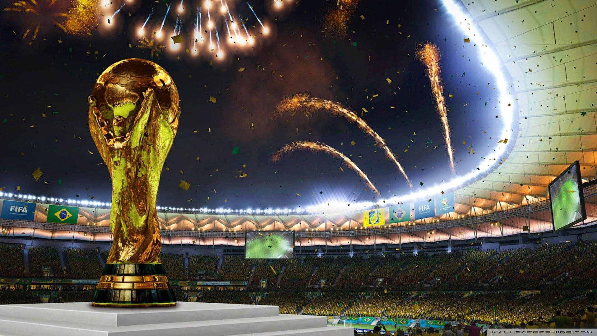
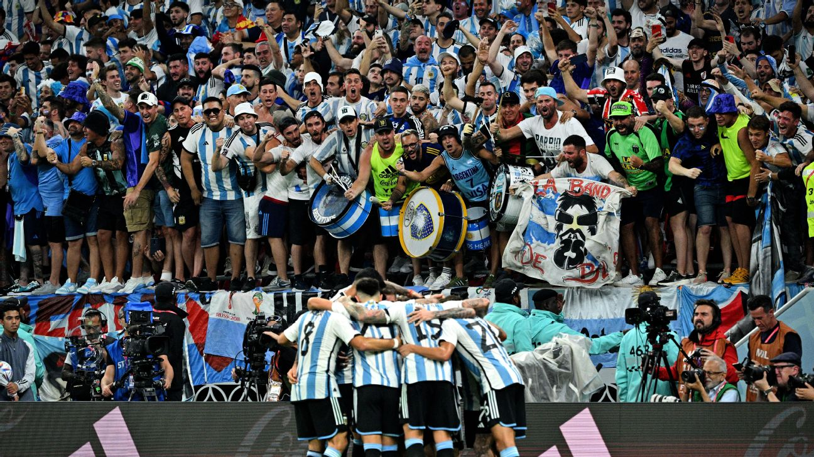

Grupo J
Argentina
La Seleccion abre su camino mundialista frente a Argelia, Austria y Jordania. Tres partidos de fase de grupos, tres ciudades deportivas y una ilusion en marcha.
Fixture FIFA
VS
ArgentinaArgelia
Argentina v Argelia
Preview
VS
ArgentinaAustria
Argentina v Austria
Preview
VS
ArgentinaJordania
Jordania v Argentina
PreviewLatest
News
HOTTrendingFresh•••

La energia de las hinchadas sera parte central de la experiencia
HOTLas selecciones preparan una ruta inedita hacia Norteamerica
HOTEl legado de los campeones inspira una nueva ilusion mundialista
HOTLa fiesta mundialista llega a Norteamerica
Play VideoFeatured
Video
Estadios llenos, ciudades sede y una copa con escala continental.
La pasion de los fanáticos como motor visual del torneo.